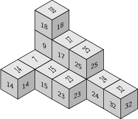
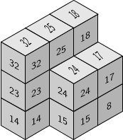

numericalsgps package for GAPM. Delgado (Universidade de Porto)
P. A. García-Sánchez (Universidad de Granada)
J. J. Morais (until 2008)
0.98 dev
2006
Deposited
Computing with numerical and affine semigroups
gap> LoadPackage("num");
#I Please load package NormalizInterface or 4ti2Interface
#I to have extended functionalities.
#I Please load package SingularInterface or singular
#I (not both) to have extended functionalities.
----------------------------------------------------------------
Loading NumericalSgps 0.980 dev
For help, type: ?NumericalSgps:
----------------------------------------------------------------
truegap> NumSgpsUse
NumSgpsUse4ti2
NumSgpsUse4ti2gap
NumSgpsUseNormaliz
NumSgpsUseSingular
NumSgpsUseSingularInterface
gap> NumSgpsUse4ti2gap();
────────────────────────────────────────────────────────────────────────────────
Loading 4ti2gap 0.0.2 (GAP wraper for 4ti2)
by Pedro A. García-Sánchez (http://www.ugr.es/local/pedro) and
Alfredo Sánchez-R.-Navarro ().
Homepage: https://bitbucket.org/gap-system/4ti2gap
────────────────────────────────────────────────────────────────────────────────
trueFor numerical semigroups
gap> s:=NumericalSemigroup(3,5,7);
<Numerical semigroup with 3 generators>
gap> IsUniquelyPresentedNumericalSemigroup(s);
true
gap> IsGenericNumericalSemigroup(s);
true
gap> MinimalPresentationOfNumericalSemigroup(s);
[ [ [ 0, 2, 0 ], [ 1, 0, 1 ] ], [ [ 3, 1, 0 ], [ 0, 0, 2 ] ],
[ [ 4, 0, 0 ], [ 0, 1, 1 ] ] ]For affine semigroups
gap> a:=AffineSemigroup([[2,0],[0,2],[1,2],[2,1]]);
<Affine semigroup in 2 dimensional space, with 4 generators>
gap> IsUniquelyPresentedAffineSemigroup(a);
true
gap> IsGenericAffineSemigroup(a);
false
gap> MinimalPresentationOfAffineSemigroup(a);
[ [ [ 2, 0, 1, 0 ], [ 0, 2, 0, 0 ] ], [ [ 1, 0, 2, 0 ], [ 0, 0, 0, 2 ] ] ]Delta sets
gap> s:=NumericalSemigroup(43,50,72,91);
<Numerical semigroup with 4 generators>
gap> DeltaSetOfNumericalSemigroup(s);
[ 1 .. 3 ]\(\omega\)-primality
gap> s:=NumericalSemigroup(143,150,172,191);
<Numerical semigroup with 4 generators>
gap> OmegaPrimalityOfNumericalSemigroup(s);time;
11
516
gap> a:=AsAffineSemigroup(s);
<Affine semigroup in 1 dimensional space, with 4 generators>
gap> OmegaPrimalityOfAffineSemigroup(a);time;
11
2111Other timings
| 4ti2gap | SingularInterface | NormalizInterface |
|---|---|---|
| 5520 | 507 | 2111 |
Now with \(S=\langle 131,301,322,311,401\rangle\)
gap> s:=NumericalSemigroup(131,301,322,311,401);
<Numerical semigroup with 5 generators>
gap> OmegaPrimalityOfNumericalSemigroup(s);time;
19
2519
gap> a:=AsAffineSemigroup(s);
<Affine semigroup in 1 dimensional space, with 5 generators>
gap> OmegaPrimalityOfAffineSemigroup(a);time;| 4ti2gap | SingularInterface | NormalizInterface |
|---|---|---|
| 23554689 | 7196 | 14577957 |
Given a set of series (actually polynomials) \(F\), we can compute an order bases for \(K[\![F]\!]\), and the semigroup of values of this ring
gap> t:=X(Rationals,"t");;
gap> l:=[t^5,-t^18-t^21,t^23-t^26];;
gap> SemigroupOfValuesOfCurve_Local(l,"basis");
[ t^5, t^21+t^18, t^26, 1/2*t^42+t^39, t^47 ]
gap> MinimalGeneratingSystem(SemigroupOfValuesOfCurve_Local(l));
[ 5, 18, 26, 39, 47 ]The same can be done for polynomials, and a SAGBI basis
gap> SemigroupOfValuesOfCurve_Global(l,"basis");
[ t^5, t^21+t^18, t^23 ]These procedures can take advantage of 4ti2[Gap,Interface] or Singular[Interface]
The factorizations Apéry sets of embedding dimension three numerical semigroups can be arranged in the space as Lshapes that teselate the plane; there are at most two of these
For embedding dimension four we were able to prove that the number of Lshapes is not bounded
gap> s:=NumericalSemigroup(7,8,9,13);;
gap> LShapesOfNumericalSemigroup(s);
[ [ [ 0, 0, 0 ], [ 1, 0, 0 ], [ 0, 1, 0 ], [ 0, 0, 1 ], [ 2, 0, 0 ],
[ 1, 1, 0 ], [ 0, 2, 0 ], [ 0, 1, 1 ], [ 0, 0, 2 ], [ 1, 2, 0 ],
[ 0, 3, 0 ], [ 0, 2, 1 ], [ 0, 4, 0 ] ],
[ [ 0, 0, 0 ], [ 1, 0, 0 ], [ 0, 1, 0 ], [ 0, 0, 1 ], [ 2, 0, 0 ],
[ 1, 1, 0 ], [ 1, 0, 1 ], [ 0, 1, 1 ], [ 0, 0, 2 ], [ 2, 0, 1 ],
[ 1, 1, 1 ], [ 1, 0, 2 ], [ 2, 0, 2 ] ] ] 
Let \(S\) be a numerical semigroup and \(h\in \mathbb Z\setminus S\)
If \(h+S\setminus\{0\}\subset S\), then \(h\) is a pseudo-Frobenius number of \(S\)
Their cardinality is the Cohen-Macaulay type of \(K[\![S]\!]\)
gap> NumericalSemigroupsWithPseudoFrobeniusNumbers([15,19,21]);
[ <Numerical semigroup>, <Numerical semigroup>, <Numerical semigroup>,
<Numerical semigroup> ]
gap> List(last,MinimalGeneratingSystem);
[ [ 8, 9, 14, 20 ], [ 9, 11, 13, 14, 16, 17 ], [ 10, 12, 13, 14, 16, 17, 18 ],
[ 11, 12, 13, 14, 16, 17, 18, 20 ] ]
gap> Length(NumericalSemigroupsWithFrobeniusNumber(21));
1828Affine semigroups can be defined in different ways
For instance the set of zero-sum sequences of \(\mathbb Z_2^2\) can be defined as
gap> a:=AffineSemigroup("equations",[[[1,0,1],[0,1,1]],[2,2]]);
<Affine semigroup>
gap> GeneratorsOfAffineSemigroup(a);
[ [ 0, 0, 2 ], [ 0, 2, 0 ], [ 2, 0, 0 ], [ 1, 1, 1 ] ]Or the semigroup of points of integer coordinates \((x,y)\) with \(2x\ge y\) and \(3y\ge x\) as
gap> a:=AffineSemigroup("inequalities",[[2,-1],[-1,3]]);
<Affine semigroup>
gap> GeneratorsOfAffineSemigroup(a);
[ [ 1, 1 ], [ 1, 2 ], [ 2, 1 ], [ 3, 1 ] ]New research leads to faster algorithms, and the need of faster algorithms also leads to new research